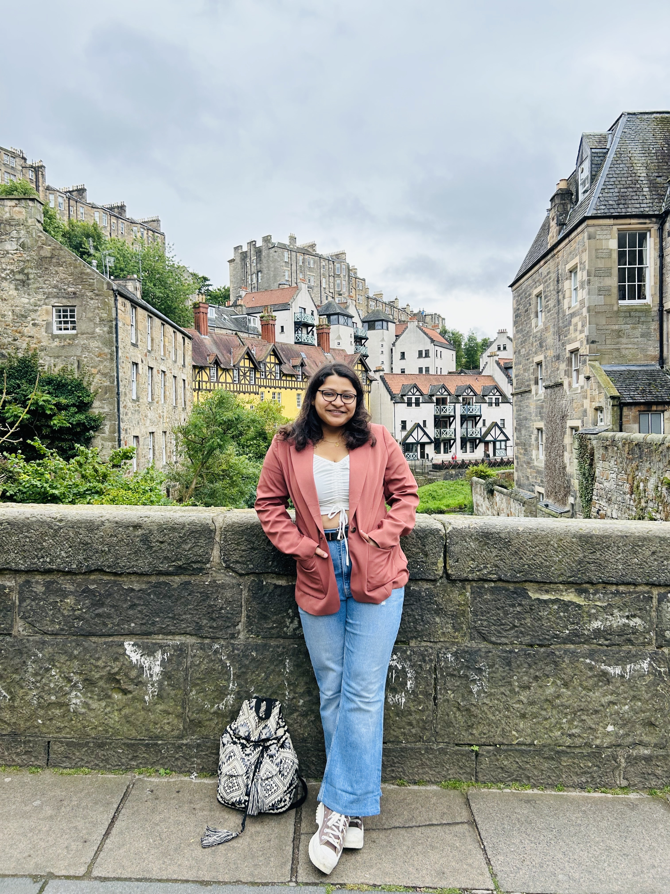

|
Sohini Gupta Namaskar! I’m an incoming PhD student in Electrical and Computer Engineering (ECE) at the University of Alberta and Alberta Machine Intelligence Institute (Amii) , starting Winter 2026. I completed my Dual Degree in Electrical Engineering (B.Tech) and Machine Learning and Signal Processing (M.Tech) from the Indian Institute of Technology Kharagpur . Hidenori Tanaka, David Krueger, and Demba Ba. I did my PhD co-affiliated with EECS, University of Michigan and CBS, Harvard, and was advised by Robert Dick and Hidenori Tanaka. I am generally interested in designing (faithful) abstractions of phenomena relevant to controlling or aligning neural networks. I am also very interested in better understanding training dynamics of neural networks, especially via a statistical physics perspective. I graduated with a Bachelor's degree in ECE from Indian Institute of Technology (IIT), Roorkee in 2019. My research in undergraduate was primarily focused on embedded systems, such as energy-efficient machine vision systems. |
 |
{kind=link}
News
|
Publications |

|
Jain S., Gupta S.*, Agarwalla S., Bandyopadhyay S. Association For Research In Otolaryngology 48th Annual MidWinter Meeting, Feb 22-26, 2025, Orlando, Florida. |
|
Website template source available here. |